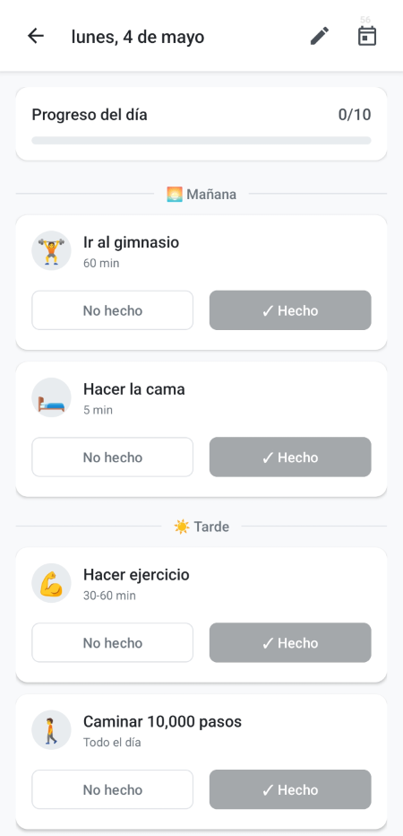
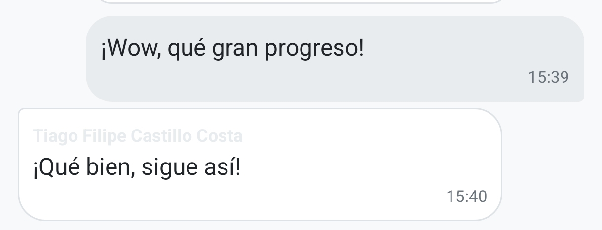
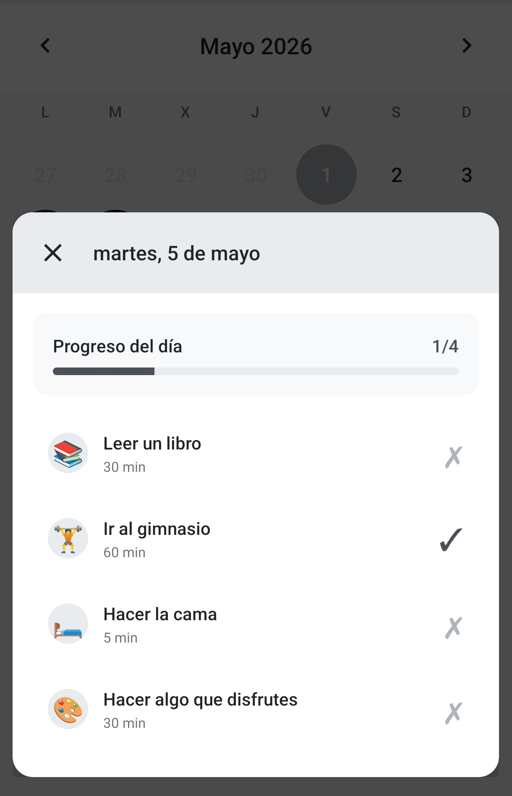

Comparación constante
Ver el progreso de otros puede desmotivar y hacer que abandones.
Tu compañero de hábitos
Pace te acompaña a construir hábitos diarios de forma entretenida, amigable e innovadora, combinando disciplina con lo mejor de lo social… sin comparaciones ni juicios.

Muchas apps de hábitos se apoyan en la motivación, el sacrificio o la comparación. Y eso agota.
Ver el progreso de otros puede desmotivar y hacer que abandones.
Compartimos con demasiada gente (trabajo, instituto, conocidos…) y no siempre recibimos apoyo.
Lo que más ayuda es sentirse acompañado durante el proceso, sin sentirse juzgado.
Un ritmo diario sencillo, con lo social en su justa medida.
Selecciona hábitos (físicos, mentales, estudio, rutina, bienestar…) o crea los tuyos.
Marca el progreso de hoy sin complicaciones. Constancia > perfección.
Solo con quienes tú decidas. Acompañamiento real, sin exposición pública.
Inspirada en lo mejor de Instagram/WhatsApp/BeReal… sin el lado tóxico de “publicarlo para todo el mundo”.
Pace está diseñada para mantener hábitos con constancia sin presión social.


Pensada para acompañarte cada día, sin complicarte.
Vista del día, progreso rápido y sensación de avance.
Revisa tu constancia y detecta patrones con el tiempo.
Comparte con tu gente: apoyo real sin exposición pública.
Notificaciones para registrar tu día cuando a ti te encaje.
Define días activos y descansa sin culpa cuando toque.
Una experiencia cómoda de día o de noche.
Construye hábitos con constancia y comparte solo con quien suma.
Lo básico antes de empezar.
No es una red social pública. Es una app de hábitos con componentes sociales privados (círculos cerrados) para que te sientas acompañado sin exposición.
Con tu círculo: personas que tú eliges. La idea es reducir presión y maximizar apoyo.
Sí: desde adolescentes hasta adultos. El enfoque es simple: constancia diaria y compañía.
Proximamente descargable en Google Play.